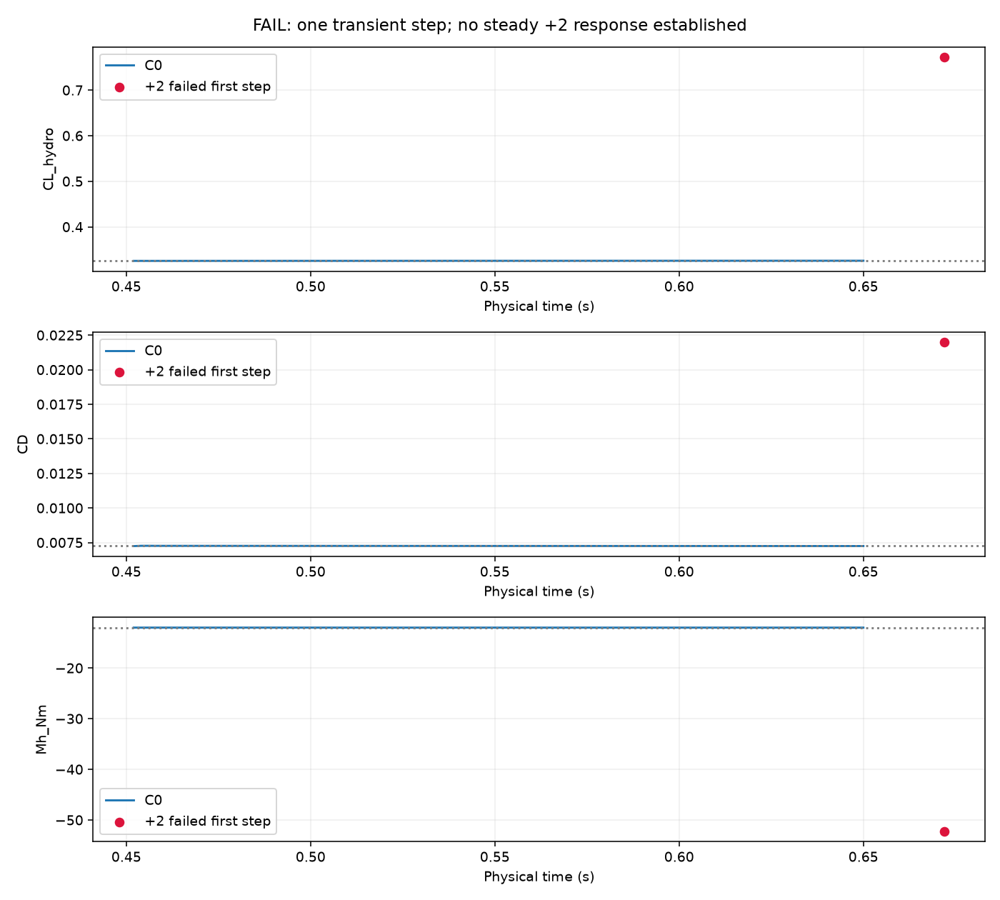
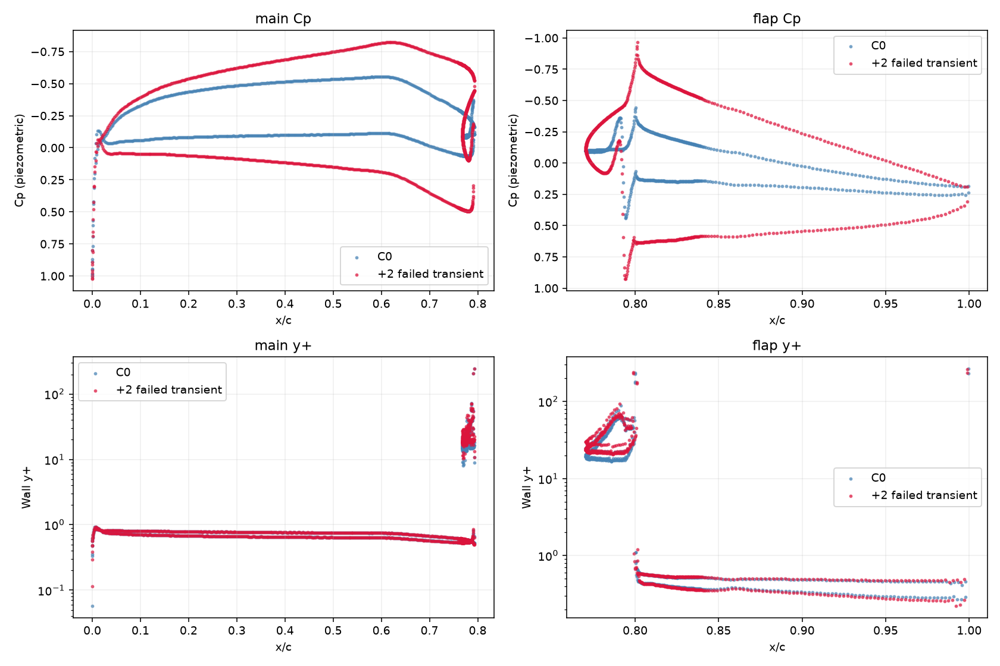
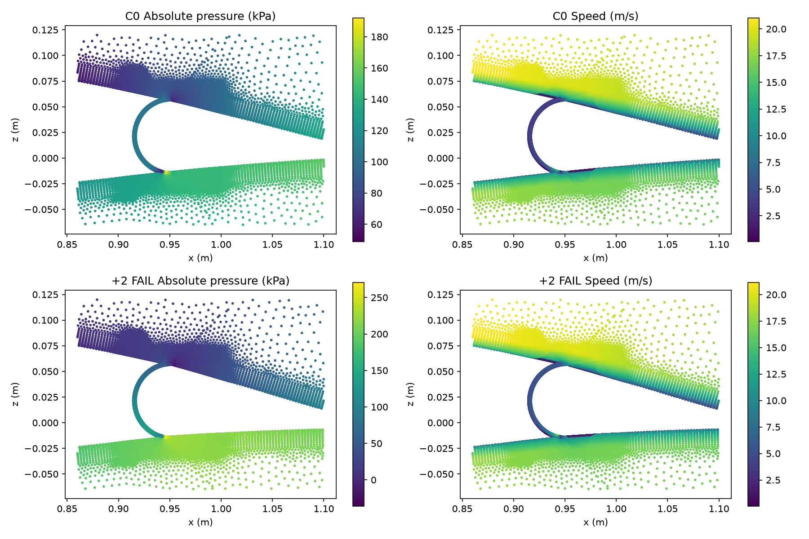
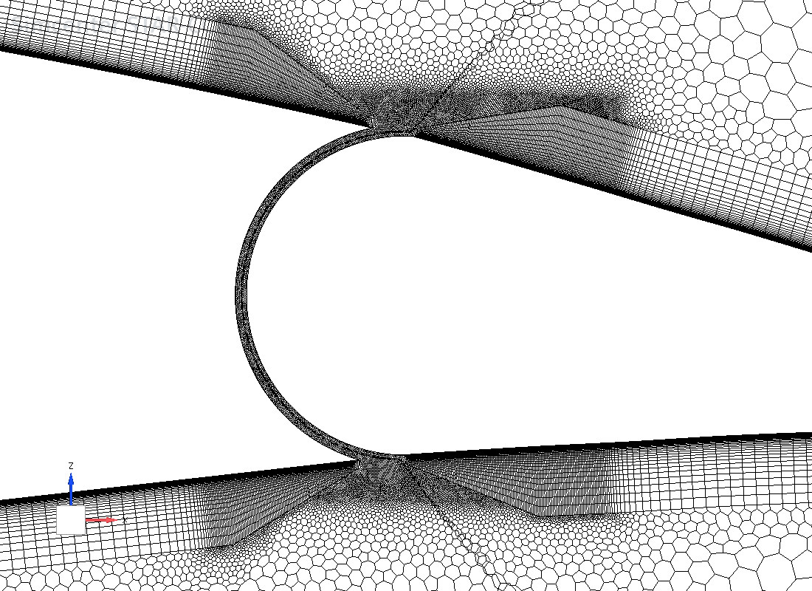

Przy +2° pierwszy krok od 0,670 do 0,672 s przekroczył próg ciśnienia. Minimum −36,222 kPa przy górnej części nosa klapki. Zachowano checkpoint, pola, residuals i logi. Nie uzyskano ustalonej odpowiedzi hydrodynamicznej.
333 939 komórek, 40 iteracji wewnętrznych, iteracja końcowa 11610. Overset i dodatnie objętości poprawne. Bilans masy 9,14·10⁻⁷, ograniczanych komórek k/ω: 0. Pole ciśnienia nie spełnia kryteriów.
| quantity | C0 | plus2_failed_transient | delta | delta_percent |
|---|---|---|---|---|
| CL_hydro | 0.32561949 | 0.77221932 | 0.44659983 | 137.1539 |
| CD | 0.0072459371 | 0.021973725 | 0.014727788 | 203.25581 |
| Fx_N | 27.937435 | 84.721894 | 56.784459 | 203.25581 |
| Fz_N | 1278.1255 | 3000.0358 | 1721.9103 | 134.72154 |
| Mh_Nm | -12.04007 | -52.236703 | -40.196634 | 333.85715 |
Duże przyrosty opisują niezaakceptowany stan przejściowy. Nie nadają się do analizy energetycznej ani danych treningowych.





8 MPI: pierwszy krok 15,244 s. Zero kroków po rozgrzewce, więc nie jest to miarodajny czas benchmarku. 12/16 MPI zablokowane po naruszeniu kryterium fizycznego. Nie wybrano najszybszej konfiguracji. Temperatur nie udało się odczytać (odmowa Windows). Telemetria obciążenia rdzeni, częstotliwości i RAM została zachowana, lecz nie stanowi pełnego porównania.
Zmiana dotyczy obu części płata: chwilowe Fz części stałej wzrosło z 1117,97 do 2328,83 N, a klapki z 160,29 do 671,21 N. Dominuje składowa ciśnieniowa; siły ścinania zmieniły się niewiele. Są to porównania zapisanych chwilowych pól, a nie przyrosty ustalone. Odpowiedź nie ogranicza się do pojedynczej wadliwej komórki przy interfejsie.
Poprawna łączność wyklucza wykryte orphan cells jako powód zatrzymania. Nie wyklucza błędu lokalnego pola ciśnienia. Główne hipotezy to gwałtowna adaptacja pól/historii czasowej po zamrożonym ustawieniu klapki oraz niewystarczająca zbieżność pierwszego kroku. Przyczyna nie jest jeszcze jednoznacznie rozdzielona. Nie uruchamiać −2° przed rozwiązaniem tego problemu.
Checkpoint diagnostyczny t=0,672 s
SHA-256: 2e127a98decb1881a24b58b02b7732b5e06c9b6bcf04865b53abb2413faea19e